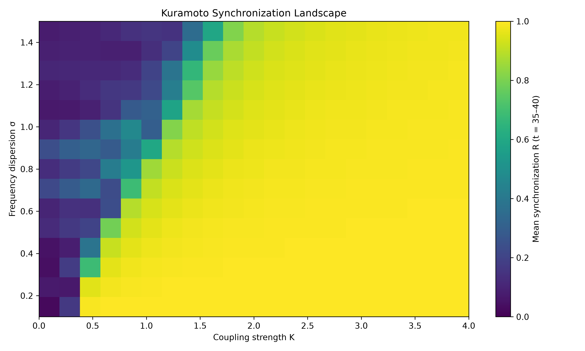
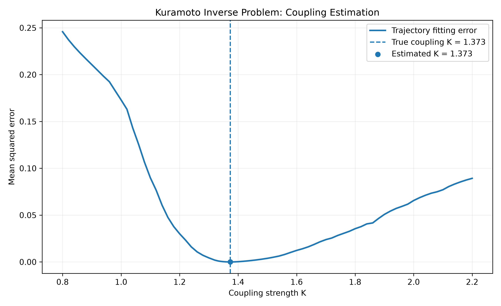
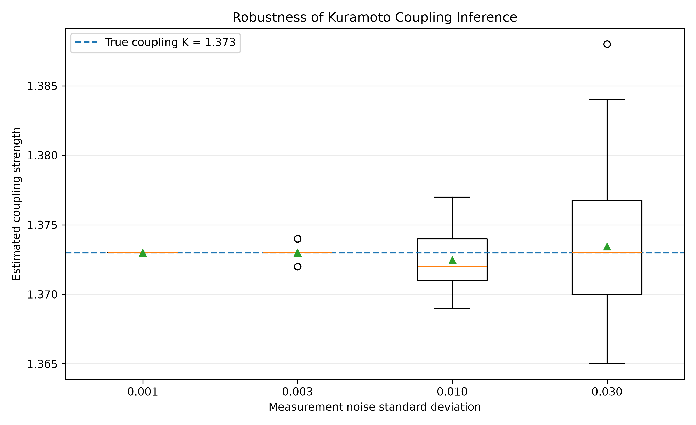
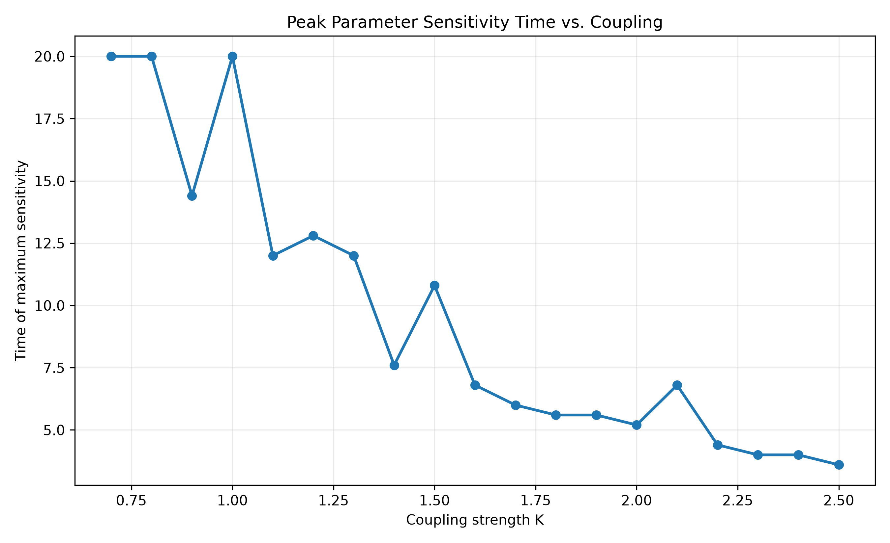
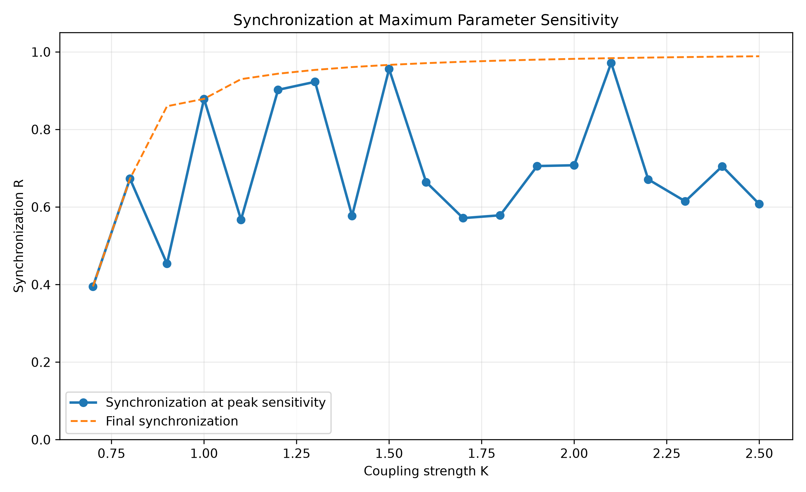
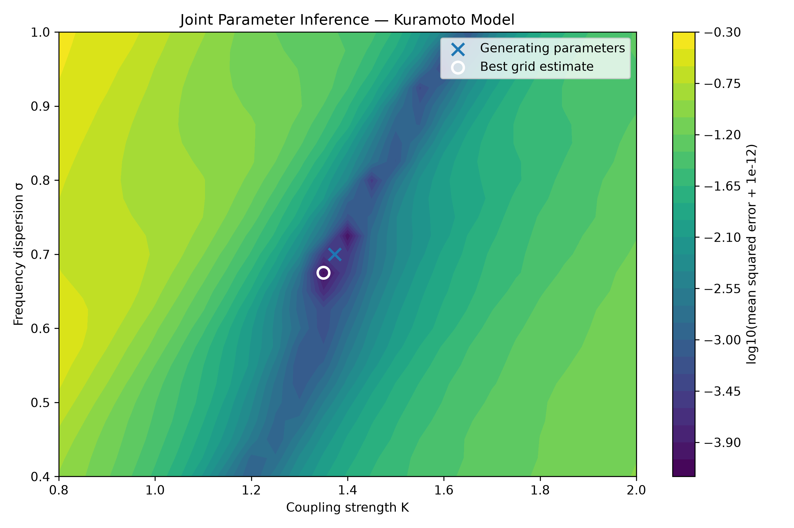

Computational Research / Mathematical Modeling
Synchronization Dynamics & Parameter Inference
Investigating how collective synchronization influences the recovery of dynamical parameters from noisy observations.
01 / Research Question
When is a dynamical system most informative about the parameters governing its behavior?
This investigation examines the relationship between synchronization, coupling strength, numerical sensitivity, and parameter identifiability in a population of coupled phase oscillators.
02 / Mathematical Framework
The system consists of 72 oscillators governed by the Kuramoto model.
Here, K represents coupling strength, ωᵢ represents the natural frequency of oscillator i, and R describes collective synchronization.
The numerical experiments use fourth-order Runge–Kutta integration with deterministic initial conditions and natural frequencies.
03 / Synchronization Landscape
A parameter sweep across 315 combinations of coupling strength and frequency dispersion reveals distinct regions of low and high coherence.

This is an operational finite-time threshold for the specified model and observation window, not a universal critical coupling constant.
04 / Inverse Parameter Estimation
The inverse problem attempts to recover coupling strength from observations of the synchronization trajectory.
The objective function measures the mean squared difference between observed and predicted synchronization trajectories.

Initial synthetic tests successfully recovered the generating coupling parameter under known initial conditions and known frequency dispersion.
05 / Measurement Noise
Repeated parameter-recovery experiments were conducted under four levels of synthetic measurement noise.

The results support accurate recovery under the tested assumptions, while demonstrating that measurement uncertainty influences parameter precision.
06 / Observation Timing and Information
Numerical sensitivity was evaluated as the local response of synchronization to changes in coupling.
Across three tested coupling regimes, the sampled time of maximum sensitivity shifted earlier as coupling strength increased.


The timing of observations therefore matters when attempting to infer dynamical parameters. The most informative window depends on the coupling regime and need not coincide with maximum coherence.
07 / Joint Parameter Inference
Coupling strength and frequency dispersion were estimated simultaneously from synthetic synchronization trajectories. The analysis investigated parameter compensation, numerical identifiability, and optimization reliability.

At the generating parameters, the sensitivity matrix was numerically full-rank, with a normalized condition number of approximately 4.08. This supports local first-order distinguishability under the tested observation protocol.
The existence of an alternative local minimum demonstrates that successful optimizer termination does not necessarily imply recovery of the globally best parameter combination. These findings are specific to the synthetic model and observation conditions investigated.
08 / Limitations and Future Work
These findings are based on deterministic initial conditions, a finite oscillator population, synthetic observations, and specified noise models. Local sensitivity does not by itself establish global parameter identifiability.
Future investigations will consider joint estimation of coupling strength and frequency dispersion, uncertainty in initial conditions, and observation schedules designed to maximize parameter information.
This study investigates an abstract dynamical model; no equivalence with a particular biological regulatory mechanism has been established.
09 / Research Notes
Detailed numerical methods, experimental results, assumptions, and limitations are documented below.
Read Full Research Notes
Kuramoto Model: Coherence Boundary and Parameter Inference
Research objectives
- Estimate the finite-time high-coherence boundary.
- Verify the model's time-rescaling relationship.
- Recover coupling strength from synthetic synchronization observations.
Mathematical model
For N = 72 oscillators:
d(theta_i)/dt = omega_i + K R sin(psi - theta_i - alpha)
R exp(i psi) = (1/N) sum_i exp(i theta_i)
Natural frequencies are constructed as omega_i = sigma * xi_i.
For positive sigma, introducing tau = sigma*t and lambda = K/sigma gives:
d(theta_i)/d(tau) = xi_i + lambda R sin(psi - theta_i - alpha)
Numerical method
- Integrator: fourth-order Runge-Kutta
- Oscillators: 72
- Phase lag: 0
- Base numerical time step: 0.04
- Population initialization: deterministic
- Solver: shared kuramoto-core.js
Finding 1: Finite-time scaling
The previous scaling experiment demonstrated agreement of matched-rescaled-time mean synchronization measurements to approximately 1e-15 for the tested parameter combinations.
The original fixed-time comparison produced different synchronization values at identical K/sigma ratios.
This is consistent with the finite observation window affecting the apparent coherence boundary.
Finding 2: Matched-time coherence boundary
Measurement window: rescaled time 35 to 40.
High-coherence criterion: mean R >= 0.9
Highest adjacent failing grid value: lambda = 1.380000 mean R = 0.89922872
First passing grid value: lambda = 1.385000 mean R = 0.90034466
Grid spacing: 0.005
Number of later below-threshold grid points: 0
Interpretation: These are finite-time, finite-population numerical results. They do not establish an infinite-population critical coupling.
Finding 3: Synthetic parameter inference
Known frequency dispersion: 0.7 True coupling: 1.373 Estimated coupling: 1.373000 Absolute estimation error: 0.000000
Observations: 51 Observation interval: 0.4 Observation duration: 20 Deterministic noise amplitude: 0.003
Estimator: Minimize mean squared error between observed and simulated synchronization trajectories.
Best mean squared error: 4.416487e-6 Loss evaluated at true K: 4.416487e-6
Assumptions and limitations
- The oscillator model is known and correctly specified.
- Frequency dispersion is assumed known during inference.
- Initial phases and deterministic frequency construction are known.
- Observations are synthetic, not experimental.
- Only synchronization magnitude R(t) is observed.
- The search is a discrete coarse-to-fine grid search.
- Identifiability and uncertainty have not been established.
- The boundary threshold R >= 0.9 is an operational choice.
- Boundary monotonicity outside the tested grid is not established.
- No biological mechanism has been validated by these simulations.
Next investigations
- Plot the parameter-inference loss landscape.
- Estimate uncertainty under independent observation-noise realizations.
- Test identifiability when both K and sigma are unknown.
- Investigate sensitivity to initial-condition uncertainty.
- Compare inference from R(t) with inference from full phase observations.
Experiment 10: Information Across Observation Windows
Research question
How does the timing of synchronization observations affect the accuracy of coupling-strength inference?
Experimental design
- Model: 72 coupled Kuramoto oscillators
- Frequency dispersion: sigma = 0.7
- Phase lag: alpha = 0
- RK4 time step: 0.04
- Coupling strengths: 0.9, 1.373, 2.3
- Observation noise SD: 0.01
- Independent synthetic datasets: 12 per coupling
- Equal-sized early, middle and late windows
- Observations per window: 13
Numerical findings
K = 0.900 - Early: mean R = 0.0222, sensitivity = 0.05082 - Middle: mean R = 0.0992, sensitivity = 0.40049 - Late: mean R = 0.7729, sensitivity = 0.78454
K = 1.373 - Early: mean R = 0.0555, sensitivity = 0.15954 - Middle: mean R = 0.8633, sensitivity = 1.08469 - Late: mean R = 0.9591, sensitivity = 0.06891
K = 2.300 - Early: mean R = 0.2862, sensitivity = 0.46209 - Middle: mean R = 0.9866, sensitivity = 0.01245 - Late: mean R = 0.9866, sensitivity = 0.01213
Interpretation
Within the tested conditions, the observation window with greatest local sensitivity shifts earlier as coupling strength increases.
For strong coupling, late-time synchronization approaches saturation and becomes relatively insensitive to coupling strength.
This is consistent with increased uncertainty when estimating coupling from late-only measurements.
Limitations
- Results depend on the specified oscillator population.
- Initial conditions and frequency dispersion are known.
- Only three true coupling strengths were tested.
- Twelve noise realizations per condition limit precision.
- Some strong-coupling fits reached optimizer bounds.
- Local sensitivity is not proof of global identifiability.
- The model has not been calibrated to biological observations.
Time-resolved analysis
Associated files:
- time-resolved-information.js
- kuramoto-time-resolved-information.csv
- plot-time-information.py
These calculate and visualize synchronization and local coupling sensitivity at individual observation times.
The peak times and their interpretation should be recorded after checking the generated numerical output.